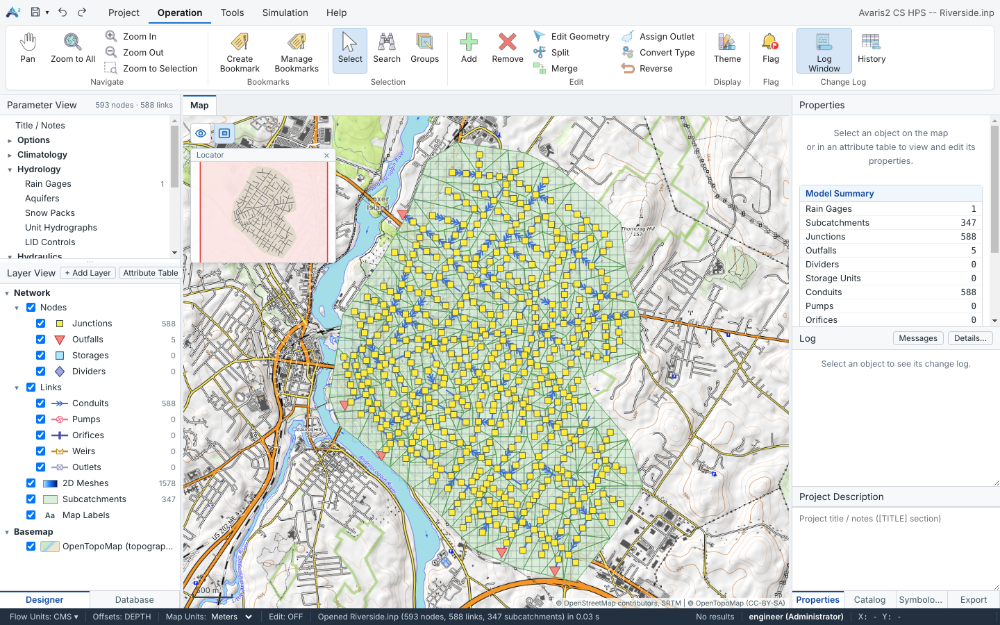
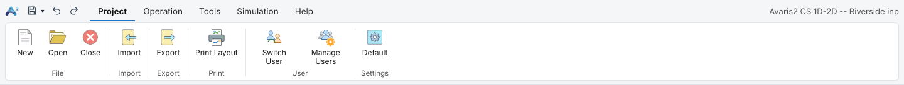
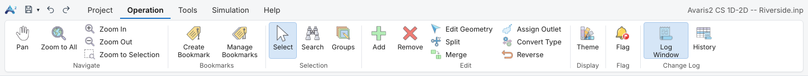
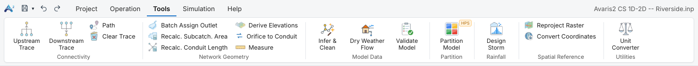
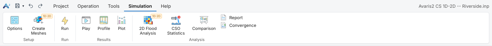
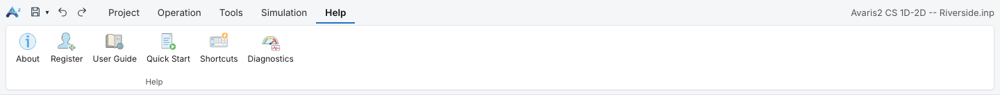
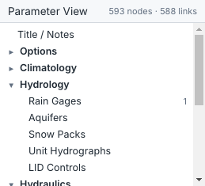
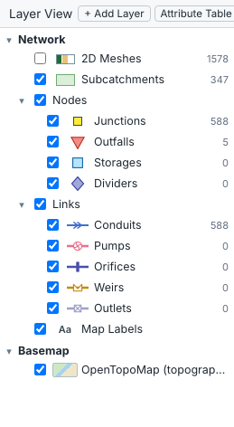
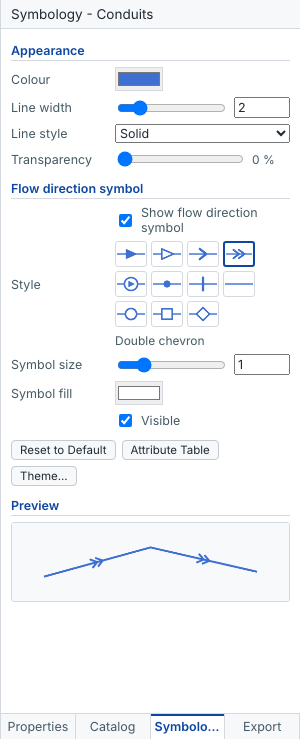
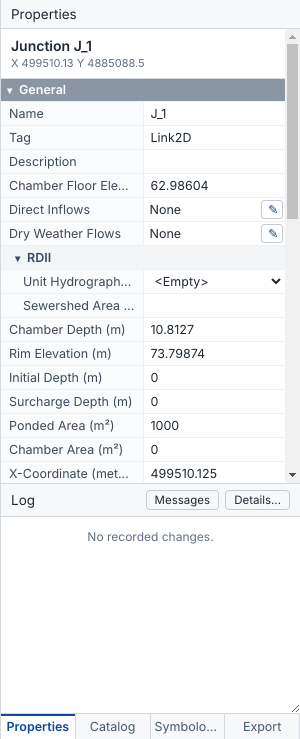

The Avaris2 CS window has a ribbon at the top, the Designer and Database panes on the left, the map and other views in the centre, docked panes on the right, and a status bar at the bottom.

| Area | Purpose | See |
|---|---|---|
| Ribbon | All commands, grouped on five tabs, plus the quick-access Save, Undo and Redo buttons. | Ribbon |
| Parameter View | The non-visual model data: options, climatology, hydrology, hydraulics, quality, curves, time series and patterns. | Parameter View |
| Layer View | The map layers: network object types, 2D meshes, added GIS layers and the basemap. | Layer View |
| Database tab | The base model and every simulation run made from it. | Database |
| Map and views | The map, plus tabs for attribute tables, the report, profiles, plots and comparisons. | Map view |
| Right panes | Properties (with the change Log and Project Description), Catalog, Symbology and Export. | Properties pane |
| Status bar | Flow units, offsets, map units, edit mode, messages, the loaded results, the signed-in user and the cursor coordinates. | Status bar |
You can resize the side panes by dragging their borders. The pane sizes, layer settings and themes are remembered between sessions.
The ribbon groups the commands by task. Large buttons start the most common commands, and small buttons sit next to them. Hover over any button to see a description.
The quick-access toolbar at the top left holds Save (the arrow next to it offers Save As), Undo and Redo.





About, Register, User Guide (this guide), Quick Start, Shortcuts and Diagnostics.
The Parameter View lists the model data that is not drawn on the map. Click an entry to open its editor. The numbers show how many items each section contains.

| Entry | Opens |
|---|---|
| Title / Notes | The model title and notes (the [TITLE] section). |
| Options | Simulation Options and Reporting (which objects and tables go into the status report). |
| Climatology | Temperature, Evaporation, Wind Speed, Snow Melt, Areal Depletion, Adjustments. |
| Hydrology | Rain Gages, Aquifers, Snow Packs, Unit Hydrographs, LID Controls. |
| Hydraulics | Transects, Controls (rules), Streets, Inlets, Inlet Usage. |
| Quality | Pollutants, Land Uses (with buildup and washoff). |
| Curves | Control, Diversion, Pump, Rating, Shape, Storage, Tidal and Weir curves. |
| Time Series, Time Patterns | The time series and pattern editors. |
| Other Sections | Any other .inp section, as text. Sections Avaris2 CS does not interpret are kept unchanged when you save. |
See Parameter editors for details.
The Layer View controls what is drawn on the map and in which order.

Right-click a layer for its commands:
Double-click a layer to open its symbology. Drag the 2D Meshes and Subcatchments layers to change their drawing order.
The Attribute Table button above the tree opens the table of any layer, including added GIS layers. The + Add Layer button adds GIS data.
The Symbology pane sets how a layer is drawn when no theme applies. Open it by double-clicking a layer in the Layer View, from the layer's right-click menu, or from the Symbology tab on the right.

The preview at the bottom shows the result. Styles are saved with your settings and used for every model.
The map draws the network in the model's coordinate system, over an optional basemap, with the legend of the active themes in the lower right.
| Action | How |
|---|---|
| Zoom | Mouse wheel (zooms around the cursor), or Operation ▸ Navigate ▸ Zoom In / Zoom Out |
| Pan | Drag with the middle mouse button, hold Space and drag, or use the Pan tool |
| Whole model | Home or Zoom to All |
| Selected objects | Zoom to Selection |
| Saved views | Create Bookmark, then Manage Bookmarks ▸ Go To |
Two buttons sit in the top-left corner of the map:
Hovering over an object shows a tooltip with its ID and its value in the current theme.
When a model has more than about 60,000 objects and you zoom out, the map shows a pre-drawn overview of the whole network, so zooming and panning stay fast. When you zoom in, the full symbols, labels and themes are drawn again.
Turn on Default Settings ▸ Simplify the map when zoomed out to make panning even smoother.
The Properties pane shows the properties of the selected object, grouped as in Avaris DS:
Click a group header to fold or unfold it.

Below the properties, the Log lists the recorded changes of the selected object. The Project Description box holds the model notes.
| Field | Meaning |
|---|---|
| Flow Units | The model flow units: CFS, GPM or MGD (US units, lengths in ft) and CMS, LPS or MLD (SI units, lengths in m). Click to change them. Avaris2 CS can also convert every value of the model to the new unit system; see Units. |
| Offsets | Whether link offsets are measured as a depth above the node invert (DEPTH) or as an elevation (ELEVATION). |
| Map Units | The unit of the map coordinates, used for lengths and areas measured on the map. |
| Edit | Whether node dragging is switched on. |
| Message | The result of the last command. |
| Results | The loaded run: number of reporting steps and step length. |
| Selection statistics | The number of selected objects, with total subcatchment area and conduit length. |
| User | The signed-in user and role. Click to switch user or change your password. |
| X, Y | The map coordinates of the cursor. |